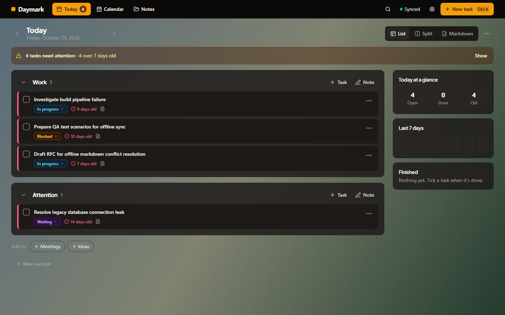
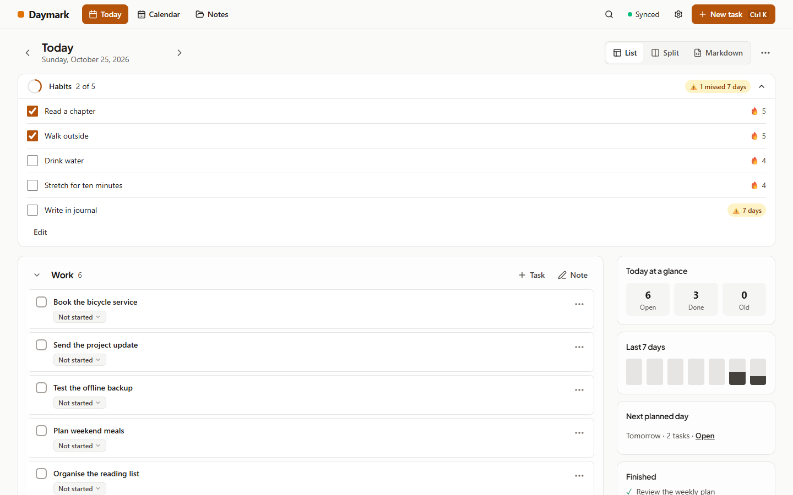
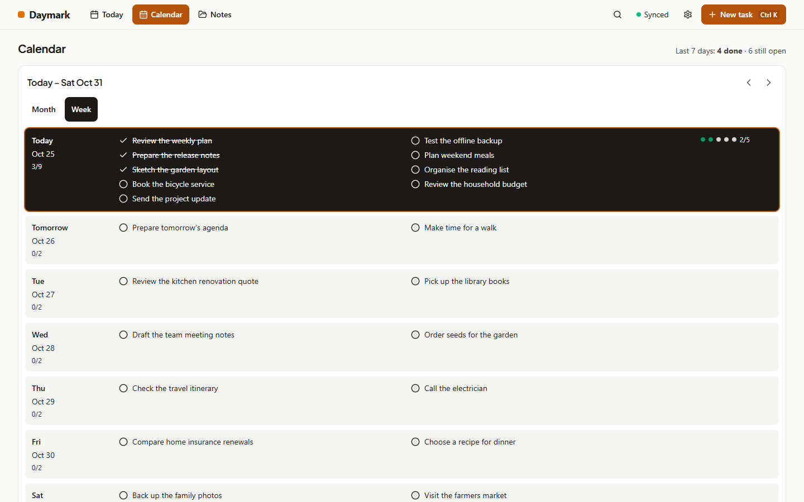
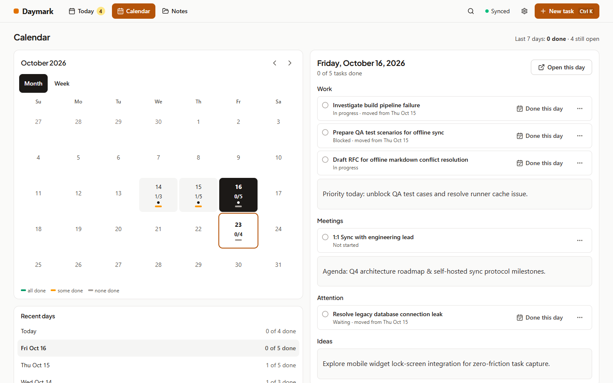
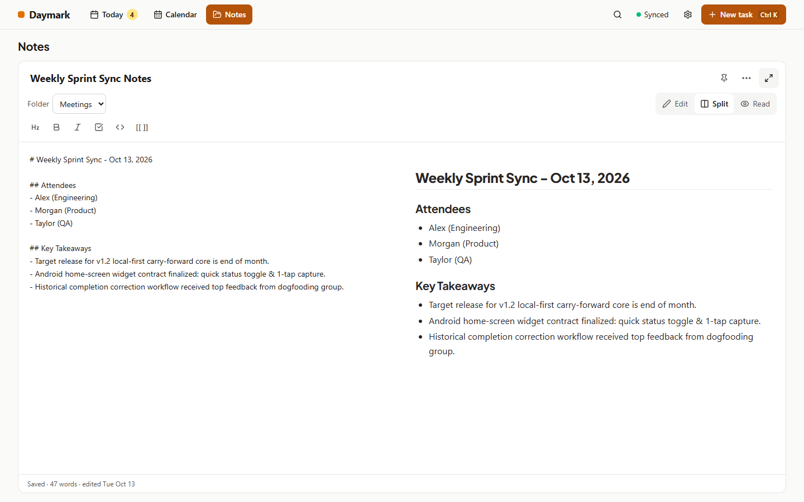
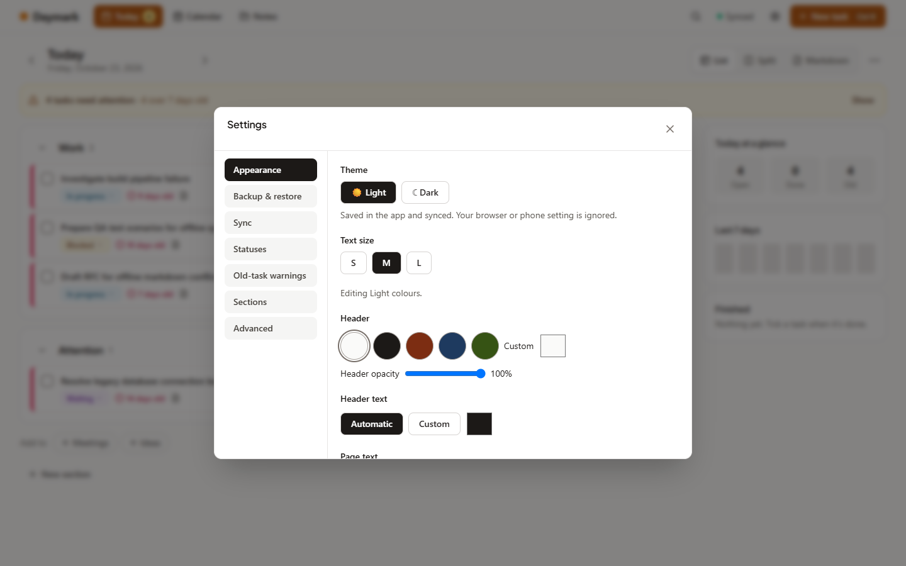
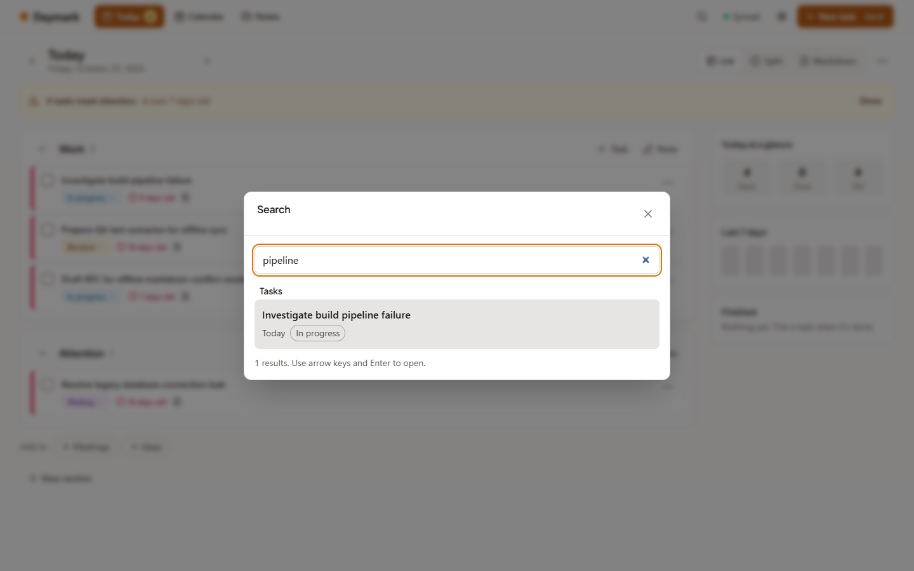
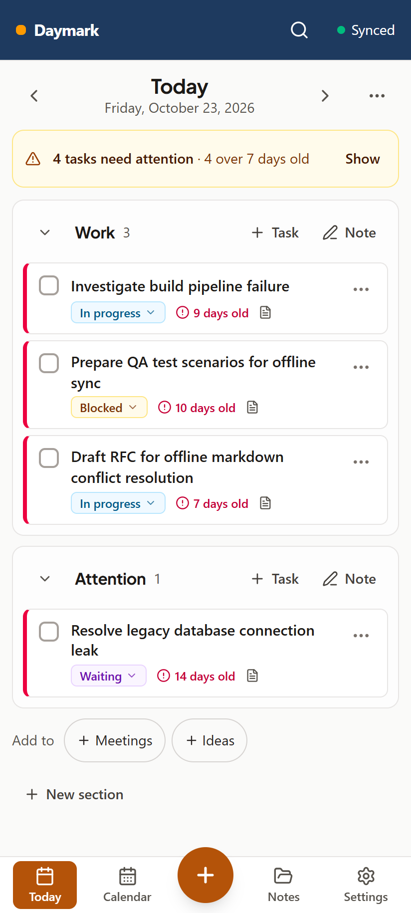
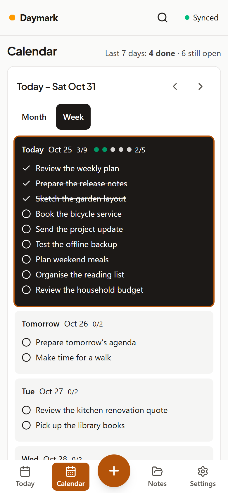

Tasks that carry forward
Unfinished tasks move to today automatically, keeping their history. Finish one late and Daymark records the day it was really done, and closes its older copies.
Version {{VERSION}} · released {{RELEASE_DATE}}
Daymark is a local-first daily notebook. Each day is a Markdown note; whatever you didn't finish moves to today with its history, and tasks that keep slipping get a gentle warning. Habits, a calendar to plan ahead, notes and home-screen widgets, on the web and on Android.
The APK comes from the GitHub release. The web app runs on a server you host yourself.

Unfinished tasks move to today automatically, keeping their history. Finish one late and Daymark records the day it was really done, and closes its older copies.
Set your habits once and tick them each day. Streaks, a warning when one slips for too long, and a habits widget on your home screen.
Month and week views with every task of the day. Open any day, plan future ones, and drag tasks to reschedule.
A full-height editor with folders, templates, focus mode and wiki links. Search across every day and every note.
Light or dark, your own colours, background photos and text size, all kept readable.
Plain Markdown files you can export at any time, offline by default, no telemetry. Sync between your devices through a server you run.








Install the APK from the latest release ({{VERSION}}). It includes the task and habits home-screen widgets. Installing over an older version keeps your notes and sign-in.
Download the APKRun the server with Docker and open it in any browser; it installs as an app and works offline. Your phone and computers sync through it.
Setup guideDaymark is source-available under the PolyForm Noncommercial License 1.0.0. You may use, copy, change and share it for any noncommercial purpose: personal use, study, research, hobby projects, and use by charities, schools and government bodies. Commercial use needs permission from the copyright holder; ask through GitHub.